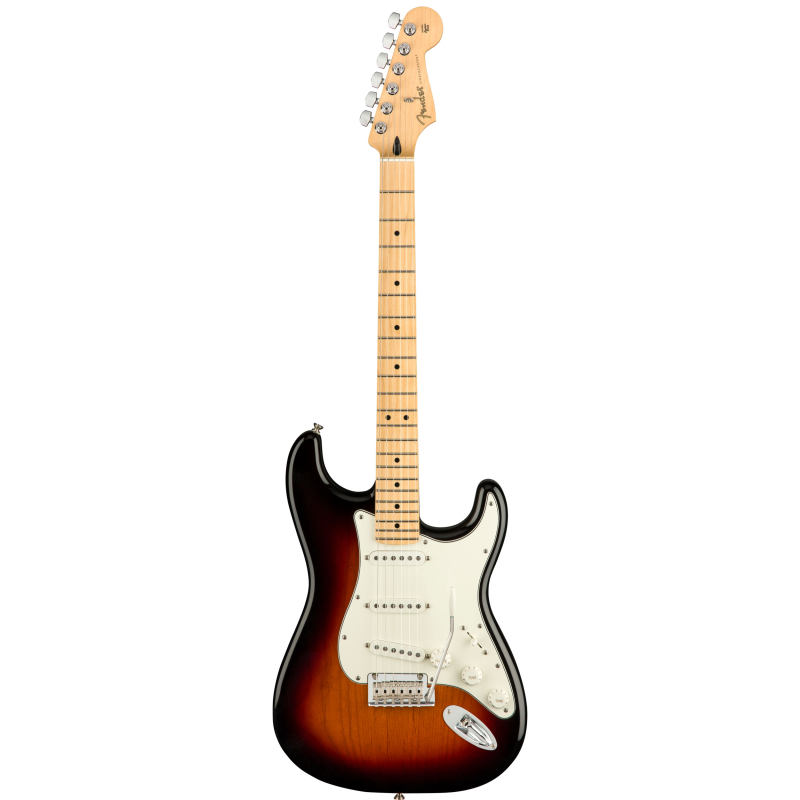
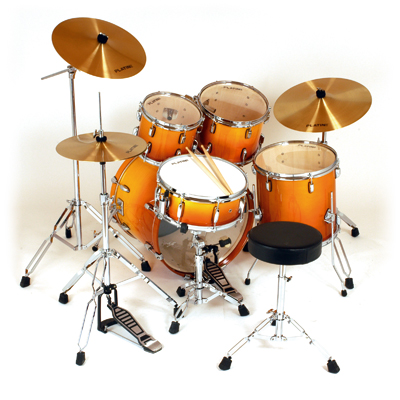
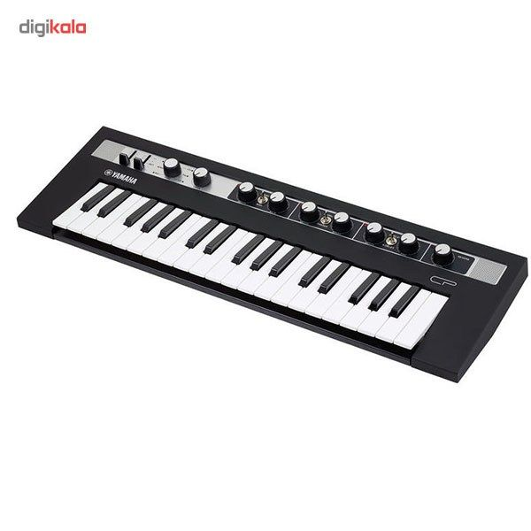

ساز پاپ

گیتار الکتریک

گیتار الکتریک یا گیتار برقی نوعی گیتار است که صدای آن بهوسیله تقویتکنندهای الکتریکی بنام پیکاپ تشدید یا تغییر مییابد.

درام

درام کیت که درام سِت یا درام نیز خوانده میشود، مجموعهای از طبلها و دیگر سازهای کوبهای (بهطور معمول سنج) است که توسط یک نوازنده و با استفاده از دو چوبک طبل نواخته میشود

کیبورد الکترونیک

کیبورد الکترونیک نام سازی است که برای نواختن نتهای مختلف موسیقی دارای چندین کلید، دکمه یا اهرم است.